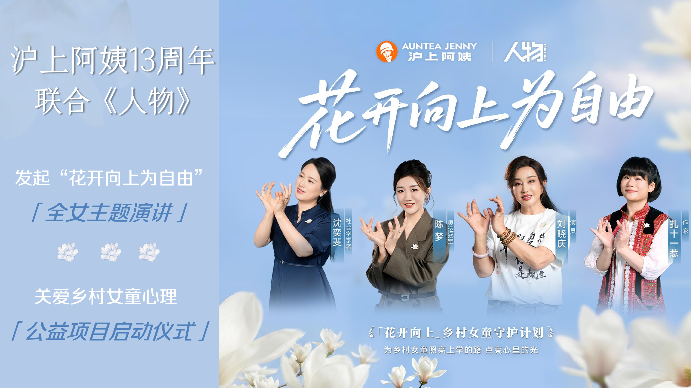
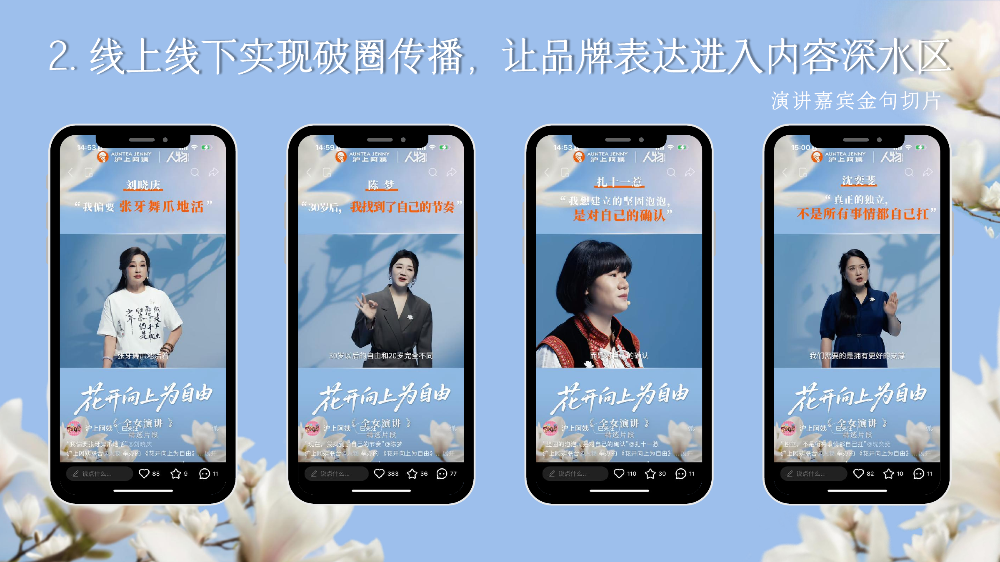
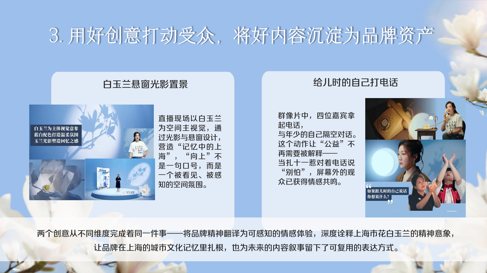
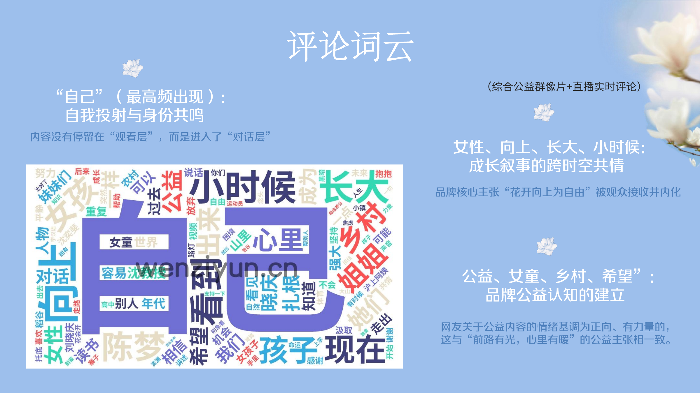

THE CHALLENGE
让品牌周年主张进入真实的女性成长经验
项目需要把品牌的向上精神、嘉宾的个人成长与乡村女童公益行动组织成一条完整内容线。初始方向希望嘉宾直接与乡村女童对话，直接鼓励缺少具体的共情处境。
Brand Communications · Public Interest
参与沪上阿姨十三周年公益传播，从人物研究与内容概念进入项目执行，并完成传播分析与结案。

THE CHALLENGE
项目需要把品牌的向上精神、嘉宾的个人成长与乡村女童公益行动组织成一条完整内容线。初始方向希望嘉宾直接与乡村女童对话，直接鼓励缺少具体的共情处境。
THE INSIGHT
四位嘉宾都经历过各自的成长困境。她们对儿时自己的表达，也能转化为送给乡村女孩的支持。
THE CREATIVE IDEA
我在团队脑暴中先提出让嘉宾与乡村女童直接对话，随后围绕叙事完整性继续推导，提出嘉宾给儿时自己打电话的内容结构，并以简单电话布景和路灯模拟光完成意象连接。
白玉兰悬窗光影由外包设计公司提出，本页以团队视觉成果标注。
From content planning to campaign wrap-up
我参与嘉宾前采与现场执行，并用项目台账整理多方任务。项目上线后，我从运营同事处取得数据，完成传播分析与结案 PPT。


MY EXECUTION
梳理四位嘉宾经历并形成前采大纲
参与前采提问与会议记录，完成主持稿初稿
建立并维护项目台账，跟进资料与物料节点
订购咖啡、花和餐食，布置休息间与更衣室
TEAM IMPACT
数据统计截至 2026 年 7 月 28 日。全网曝光采用结案报告的跨平台累计口径。
MY MEASUREMENT
我从运营同事处取得平台数据，完成数据整理、传播分析与结案 PPT。页面数据标注为团队项目结果，个人贡献聚焦分析与复盘。

REFLECTION
人物经历、空间道具与公益行动需要围绕同一个叙事任务协同，品牌主张才能进入具体内容。
前采问题、任务台账、会议记录与数据口径帮助品牌方、嘉宾团队、内容团队与摄制团队围绕同一交付目标协作。